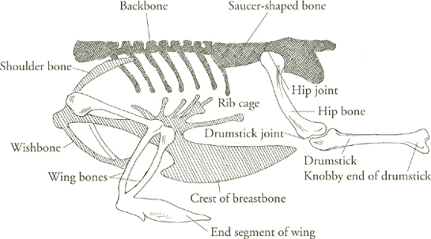
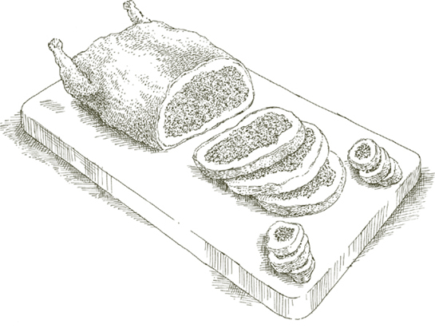

IF THIS WERE a still life its title could be “Chicken with Two Lemons.” That is all that there is in it. No fat to cook with, no basting to do, no stuffing to prepare, no condiments except for salt and pepper. After you put the chicken in the oven you turn it just once. The bird, its two lemons, and the oven do all the rest. Again and again, through the years, I meet people who come up to me to say, “I have made your chicken with two lemons and it is the most amazingly simple recipe, the juiciest, best-tasting chicken I have ever had.” And you know, it is perfectly true.
For 4 servings
A 3- to 4-pound chicken
Salt
Black pepper, ground fresh from the mill
2 rather small lemons
1. Preheat oven to 350°.
2. Wash the chicken thoroughly in cold water, both inside and out. Remove all the bits of fat hanging loose. Let the bird sit for about 10 minutes on a slightly tilted plate to let all the water drain out of it. Pat it thoroughly dry all over with cloth or paper towels.
3. Sprinkle a generous amount of salt and black pepper on the chicken, rubbing it with your fingers over all its body and into its cavity.
4. Wash the lemons in cold water and dry them with a towel. Soften each lemon by placing it on a counter and rolling it back and forth as you put firm downward pressure on it with the palm of your hand. Puncture the lemons in at least 20 places each, using a sturdy round toothpick, a trussing needle, a sharp-pointed fork, or similar implement.
5. Place both lemons in the bird’s cavity. Close up the opening with toothpicks or with trussing needle and string. Close it well, but don’t make an absolutely airtight job of it because the chicken may burst. Run kitchen string from one leg to the other, tying it at both knuckle ends. Leave the legs in their natural position without pulling them tight. If the skin is unbroken, the chicken will puff up as it cooks, and the string serves only to keep the thighs from spreading apart and splitting the skin.
6. Put the chicken into a roasting pan, breast facing down. Do not add cooking fat of any kind. This bird is self-basting, so you need not fear it will stick to the pan. Place it in the upper third of the preheated oven. After 30 minutes, turn the chicken over to have the breast face up. When turning it, try not to puncture the skin. If kept intact, the chicken will swell like a balloon, which makes for an arresting presentation at the table later. Do not worry too much about it, however, because even if it fails to swell, the flavor will not be affected.
7. Cook for another 30 to 35 minutes, then turn the oven thermostat up to 400°, and cook for an additional 20 minutes. Calculate between 20 and 25 minutes’ total cooking time for each pound. There is no need to turn the chicken again.
8. Whether your bird has puffed up or not, bring it to the table whole and leave the lemons inside until it is carved and opened. The juices that run out are perfectly delicious. Be sure to spoon them over the chicken slices. The lemons will have shriveled up, but they still contain some juice; do not squeeze them, they may squirt.
Ahead-of-time note  If you want to eat it while it is warm, plan to have it the moment it comes out of the oven. If there are leftovers, they will be very tasty cold, kept moist with some of the cooking juices and eaten not straight out of the refrigerator, but at room temperature.
If you want to eat it while it is warm, plan to have it the moment it comes out of the oven. If there are leftovers, they will be very tasty cold, kept moist with some of the cooking juices and eaten not straight out of the refrigerator, but at room temperature.
For 4 servings
A 3½-pound chicken
2 sprigs of fresh rosemary OR 1 heaping teaspoon dried leaves
3 garlic cloves, peeled
Salt
Black pepper, ground fresh from the mill
2 tablespoons vegetable oil
2. Wash the chicken inside and out with cold water, and pat thoroughly dry with cloth or paper towels.
3. Put one of the fresh rosemary sprigs, or half the dried leaves, inside the bird’s cavity together with all the garlic, salt, and pepper.
4. Rub 1 tablespoon of the oil over the chicken’s skin, and sprinkle with salt and pepper. Strip the leaves from the remaining sprig of rosemary, and sprinkle them over the bird, or sprinkle the remaining dried leaves. Put the chicken together with the remaining tablespoon of oil in a roasting pan, and place it on the middle rack of the preheated oven. Every 15 minutes, turn and baste it with the fat and cooking juices that collect in the pan. Cook until the thigh feels very tender when prodded with a fork, and the meat comes easily off the bone, about 1 hour or more.
5. Transfer the chicken to a warm serving platter. Tip the roasting pan and spoon off all but a small amount of fat. Place the pan over the stove, turn the heat on to high, add 2 tablespoons of water, and while it boils away, use a wooden spoon to scrape loose any cooking residues stuck to the bottom. Pour the pan juices over the chicken and serve at once.
For 4 servings
1 tablespoon butter
2 tablespoons vegetable oil
A 3½-pound chicken, cut into 4 pieces
2 or 3 garlic cloves, peeled
1 sprig of fresh rosemary broken in two OR ½ teaspoon dried rosemary leaves
Salt
Black pepper, ground fresh from the mill
½ cup dry white wine
1. Put the butter and oil in a saute pan, turn on the heat to medium high, and when the butter foam begins to subside, put in the chicken quarters, skin side down.
2. Brown the chicken well on both sides, then add the garlic and rosemary. Cook the garlic until it becomes colored a pale gold, and add salt, pepper, and the wine. Let the wine simmer briskly for about 30 seconds, then adjust heat to cook at a slow simmer, and put a lid on the pan, setting it slightly ajar. Cook until the bird’s thigh feels very tender when prodded with a fork, and the meat comes easily off the bone, calculating between 20 and 25 minutes per pound. If while the chicken is cooking, you find the liquid in the pan has become insufficient, replenish it with 1 or 2 tablespoons water as needed.
3. When done, transfer the chicken to a warm serving platter, using a slotted spoon or spatula. Remove the garlic from the pan. Tip the pan, spooning off all but a little of the fat. Turn the heat up to high, and boil the water away while loosening cooking residues from the bottom and sides with a wooden spoon. Pour the pan juices over the chicken and serve at once.
Cacciatora means hunter’s style, and since there has always been a hunter in nearly every Italian household, every Italian cook prepares a dish with a claim to that description. Making generous allowances for the uncounted permutations in the dishes that go by the cacciatora name, what they generally consist of is a chicken or rabbit fricassee with tomato, onion, and other vegetables. And that is exactly what this is.
For 4 to 6 servings
A 3- to 4-pound chicken, cut into 6 to 8 pieces
2 tablespoons vegetable oil
Flour, spread on a plate
Salt
Black pepper, ground fresh from the mill
⅓ cup onion sliced very thin
⅔ cup dry white wine
1 sweet yellow or red bell pepper, seeds and core removed and cut into thin julienne strips
1 carrot, peeled and cut into thin disks
½ stalk celery sliced thin crosswise
1 garlic clove, peeled and chopped very fine
⅔ cup canned imported Italian plum tomatoes, chopped coarse, with their juice
1. Wash the chicken in cold water and pat thoroughly dry with cloth or paper towels.
2. Choose a saute pan that can subsequently accommodate all the chicken pieces without crowding them. Put in the oil and turn the heat on to medium high. When the oil is hot, turn the chicken in the flour, coat the pieces on all sides, shake off excess flour, and slip them into the pan, skin side down. Brown that side well, then turn them and brown the other side. Transfer them to a warm plate, and sprinkle with salt and pepper.
3. Turn the heat back on to medium high, put in the sliced onion, and cook the onion until it has become colored a deep gold. Add the wine. Let it simmer briskly for about 30 seconds while using a wooden spoon to scrape loose the browning residues on the bottom and sides of the pan. Return the browned chicken pieces to the pan, except for the breasts, which cook faster and will go in later. Add the bell pepper, carrot, celery, garlic, and the chopped tomatoes with their juice. Adjust heat to cook at a slow simmer, and put a lid on the pan to cover tightly. After 40 minutes add the breast and continue cooking at least 10 minutes more until the chicken thighs feel very tender when prodded with a fork, and the meat comes easily off the bone. Turn and baste the chicken pieces from time to time while they are cooking.
4. When the chicken is done, transfer it to a warm serving platter, using a slotted spoon or spatula. If the contents of the pan are on the thin, watery side, turn the heat up to high under the uncovered pan, and reduce them to an appealing density. Pour the contents of the pan over the chicken and serve at once.
Ahead-of-time note The dish can be cooked through to the end up to a day in advance. Let the chicken cool completely in the pan juices before refrigerating. Reheat in a covered pan at a slow simmer, turning the chicken pieces until they are warmed all the way through.
THIS APPROACH to the cacciatora style is even simpler than the preceding one. There is less wine, no flour, and there are no other vegetables except for tomatoes and onion, which in this version are present in more prominent proportions, bestowing on the chicken a sweeter, fruitier flavor, somewhat like that of a very fresh pasta sauce. Also note that here olive oil replaces vegetable oil.
For 4 to 6 servings
A 3- to 4-pound chicken, cut into 6 to 8 pieces
2 tablespoons extra virgin olive oil
1 cup onion sliced very thin
2 garlic cloves, peeled and sliced very thin
Salt
Black pepper, ground fresh from the mill
⅓ cup dry white wine
1½ cups fresh, very ripe, firm meaty tomatoes, skinned raw with a peeler and chopped, OR canned imported Italian plum tomatoes, cut up, with their juice
1. Wash the chicken in cold water and pat thoroughly dry with cloth or paper towels.
2. Choose a saute pan that can subsequently contain all the chicken pieces without crowding them. Put in the olive oil and the sliced onion, and turn on the heat to medium. Cook the onion, turning it occasionally, until it becomes translucent.
3. Add the sliced garlic and the chicken pieces, putting them in skin side facing down. Cook until the skin forms a golden crust, then turn the pieces and do the other side.
4. Add salt and several grindings of pepper, and turn the chicken pieces over 2 or 3 times. Add the wine, and let it simmer away until about half of it has evaporated.
5. Add the cut-up tomatoes, turn down the heat to cook at an intermittent simmer, and cover the pan, putting the lid on slightly askew. Turn and baste the chicken pieces from time to time while they are cooking. Whenever you find that the liquid in the pan becomes insufficient, add 2 tablespoons of water. Cook until the chicken thighs feel very tender when prodded with a fork, and the meat comes easily off the bone, about 40 minutes.
Ahead-of-time note The recommendations in the preceding cacciatora recipe are applicable here.
For 4 servings
A 3½-pound chicken, cut into 4 pieces
2 tablespoons vegetable oil
Salt
Black pepper, ground fresh from the mill
½ cup dry white wine
A small packet OR 1 ounce dried porcini mushrooms, reconstituted as described and cut up
The filtered water from the mushroom soak, see instructions
¼ cup canned imported Italian plum tomatoes, chopped coarse, with their juice
1 tablespoon butter
1. Wash the chicken in cold water and pat thoroughly dry with cloth or paper towels.
2. Put the oil in a saute pan, turn on the heat to medium high, and when the oil is very hot, slip in the chicken pieces, skin side down. Brown them well on that side, then turn them and brown the other side. Sprinkle with salt and pepper, turn them once, then add the wine. Let the wine simmer briskly for 30 seconds as you scrape loose browning residue from the bottom and sides of the pan with a wooden spoon.
3. Add the chopped reconstituted porcini, the filtered water from their soak, and the chopped tomatoes with their juice. Turn over all ingredients then adjust heat to cook at a slow simmer, and put a lid, slightly ajar, on the pot. Cook until the bird’s thighs feel very tender when prodded with a fork, and the meat comes easily off the bone, about 50 minutes. Turn the chicken pieces from time to time while they are cooking.
4. When the chicken is done, transfer it to a warm serving platter. Tip the pan and spoon off all but a little of the fat. If the juices in the pan are too thin, boil them down over high heat. Swirl into them the 1 tablespoon of butter, then pour all the contents of the pan over the chicken and serve at once.
IN THIS FRICASSEE, chicken pieces cook smothered in red cabbage, which keeps them tender and invests them with some of its own sweetness. By the time the chicken is done, the cabbage dissolves into a dense, clinging sauce.
For 4 servings
1 cup onion sliced very thin
¼ cup extra virgin olive oil plus 1 tablespoon
2 garlic cloves, peeled and each cut into 4 pieces
4 cups red cabbage shredded fine, about 1 pound
A 3- to 4-pound chicken, cut into 8 pieces
½ cup dry red wine
Black pepper, ground fresh from the mill
Salt
1. Put the sliced onion, the ¼ cup oil, and the garlic in a saute pan, turn the heat on to medium, and cook the garlic until it becomes colored a deep gold. Add the shredded cabbage. Stir thoroughly to coat well, sprinkle with salt, stir again, adjust heat to cook at a gentle simmer, and put a lid on the pan. Cook the cabbage for 40 minutes or more, turning it over from time to time, until it has become very tender and considerably reduced in bulk.
2. Wash the chicken pieces in cold water, and pat thoroughly dry with cloth or paper towels.
3. In another pan, put in 1 tablespoon of olive oil, turn on the heat to medium, and, after warming up the oil very briefly, put in all the chicken pieces skin side down in a single layer. Turn the chicken after a little while to brown the pieces equally on both sides, then transfer them to the other pan, all except the breast, which you’ll hold aside until later. Turn the chicken over in the cabbage, add the wine and a few grindings of pepper, cover the pan, putting the lid on slightly ajar, and continue cooking at a slow, steady simmer. From time to time turn the chicken pieces over, sprinkling them once with salt. After 40 minutes add the breasts. Cook for about 10 minutes more, until the chicken is tender all the way through and the meat comes easily off the bone. You will no longer be able to recognize the cabbage as such; it will have become a dark, supple sauce for the chicken. Transfer the entire contents of the pan to a warm platter and serve at once.
Ahead-of-time note The dish can be prepared up to this point even 2 or 3 days in advance. Reheat completely in a covered pan before proceeding to the next step.
For 4 servings
A 3- to 4-pound chicken, cut into 8 pieces
2 tablespoons vegetable oil
1 tablespoon butter
1 sprig of fresh rosemary OR 1 teaspoon dried leaves
3 garlic cloves, peeled
Salt
Black pepper, ground fresh from the mill
⅓ cup dry white wine
2 tablespoons freshly squeezed lemon juice
Lemon peel with none of the white pith, cut into 6 thin julienne strips
1. Wash the chicken pieces in cold water, and pat thoroughly dry with cloth or paper towels.
2. Choose a saute pan that can subsequently accommodate all the chicken pieces without overlapping. Put in the oil and butter, turn the heat on to medium high, and when the butter foam begins to subside, put in the chicken, skin side down. Brown the chicken on both sides, then add the rosemary, garlic, salt, and pepper. Cook for 2 or 3 minutes, turning the chicken pieces from time to time, then remove the breast and set aside.
3. Add the wine, let it bubble at a brisk simmer for about 20 seconds, then adjust the heat to cook at a very slow simmer, and put a lid on the pan slightly ajar. After 40 minutes return the breast to the pan. Cook for 10 minutes more at least, until the thighs of the chicken feel very tender when prodded with a fork, and the meat comes easily off the bone. While it’s cooking, check the liquid in the pot from time to time. If it becomes insufficient, replenish with 2 or 3 tablespoons water.
4. When the chicken is done, remove from heat and transfer the pieces to a warm serving platter, using a slotted spoon or spatula. Tip the pan and spoon off all but a little bit of the fat. Add the lemon juice and lemon peel, place the pan over medium-low heat, and use a wooden spoon to scrape loose cooking residues from the bottom and sides. Pour the pan juices over the chicken and serve at once.
LIKE THE LAMB CHOPS in this recipe, this chicken is cooked, then tossed with a raw mixture of beaten egg yolks and lemon juice, which the heat of the meat seizes on to form a clinging, satiny coat.
For 4 servings
A 3- to 4-pound chicken, cut into 8 pieces
4 tablespoons (½ stick) butter
3 tablespoons onion chopped very fine
Salt
Black pepper, ground fresh from the mill
1 cup Basic Homemade Meat Broth, prepared as directed, OR 1 bouillon cube dissolved in 1 cup water
2 egg yolks (see warning about salmonella poisoning)
¼ cup freshly squeezed lemon juice
1. Wash the chicken pieces in cold water, and pat thoroughly dry with cloth or paper towels.
2. Choose a sauté pan that can later accommodate all the chicken pieces without overlapping. Put in the butter and chopped onion, turn the heat on to medium, and cook the onion until it becomes colored a pale gold. Turn the heat up a little, and put in the chicken, skin side down. Brown the pieces thoroughly on both sides.
3. Add salt and pepper, turn the chicken pieces over, then remove the breasts from the pan. Add all the broth, adjust heat to cook at a very gentle simmer, and cover the pan with the lid on well ajar. After 40 minutes, return the breast to the pan and cook for at least 10 minutes more, until the thighs feel very tender when prodded with a fork, and the meat comes easily off the bone. While it’s cooking, turn the chicken from time to time. If the broth should become insufficient, add 2 or 3 tablespoons water when needed. When the chicken is done, however, there should be no liquid left in the pan. If you find watery juices in the pan, uncover, turn the heat up to high, and boil them away, turning the chicken pieces frequently as you do so. Take the pan off heat, leaving the chicken in.
4. Put the egg yolks in a small bowl and beat them lightly with a fork or whisk while slowly adding the lemon juice. Pour the mixture over the chicken pieces, tossing to coat them well. Transfer the entire contents of the pan to a warm platter, and serve at once.

IN ROME they call this the devil’s chicken because of the diabolical quantity of the crushed black peppercorns that are used. Actually, although it is indeed peppery, its most striking quality is its fragrance, a medley of the aromas of the grill, of the black pepper, and of lemon.
For this preparation, the chicken must be split open and pounded flat. The butcher can easily do it, but so can you, following the directions in the recipe. Before it is grilled it must be rubbed with peppercorns, and marinated for at least 2 hours in lemon juice and olive oil. It’s an ideal dish for a cookout because you can prepare the chicken in the kitchen, put it with its marinade in one of those plastic bags with an airtight closure, and take it with you. By the time your fire is ready later in the day, the chicken will be ready too.
For 4 to 6 servings
A 3½-pound chicken
1 tablespoon black peppercorns
⅓ cup freshly squeezed lemon juice
2 tablespoons extra virgin olive oil
OPTIONAL: a charcoal or wood-burning grill
Salt
1. The chicken must be flattened either by you or the butcher into a shape that will look more like that of a butterfly than of a bird. If you are doing it, place the chicken on a work counter with the breast facing down. Using a cleaver or a chopping knife, split it open along the entire backbone. Crack the breastbone from behind, spreading the chicken as flat as you can with your hands. Turn it over with its breast facing you. Make cuts where the wings and legs join the body, without detaching them, but for the purpose of spreading them out flat. Turn the chicken over, the breast facing down again, and pound it as flat as you can, using a meat pounder or the flat side of a cleaver.
2. Wrap the peppercorns in a towel and crack them with a mallet, a meat pounder, or a hammer. If you have a mill that can crack peppercorns very coarse, you can use that instead. Put the chicken in a deep dish, and rub the cracked peppercorns into it, covering as much of it as you can. Pour the lemon juice and olive oil over it, and let steep for 2 to 3 hours, turning it and basting it from time to time.
3. If cooking the chicken in an indoor broiler, preheat it at least 15 minutes in advance. If using charcoal, light it in sufficient time to form a coat of white ash; if using wood, in time to produce a substantial quantity of embers.
4. Sprinkle the chicken with salt, and place it on the broiler pan, if indoors, on the grill, if outdoors, with the skin side facing the source of heat. Cook until the skin becomes colored brown, then baste it with a little of its marinade, and turn it over. Turn the bird from time to time until it is fully cooked. The thigh must feel very tender when prodded with a fork. The cooking time varies considerably, depending on the intensity of the fire, and on the chicken itself. Should you run out of liquid from the marinade before the chicken is done, baste it with fresh olive oil. When it is ready, sprinkle with fresh-cracked pepper, and serve at once.
BREAST OF CHICKEN has a delicate texture and fine, mild flavor comparable to that of veal scaloppine. Scaloppine are pounded thin to permit the most rapid cooking; boned chicken breast is too fragile to be pounded, but it can be converted into scaloppine-like slices by filleting. When you use the method described here, chicken breasts can become an inexpensive but no less fine alternative to veal, adaptable to the numerous ways one can prepare scaloppine.
1. A chicken breast is sold covered by two layers of skin, the fatty, yellow outer one, and a very thin, membrane-like inner layer. When you pull these away with your fingers you will find them attached at the breastbone and at the sides of the breast where the rib cage was connected. Cut them loose from both places and discard them.

2. Run a finger along the upper part of the breast where the wing used to be attached. Feel for an opening. You will find one where your fingertip can enter without any resistance: It is the space between the two muscles, a large one and a small one, that lie cupped, one over the other, and that constitute each half of the breast. You must detach them, one at a time. Detach the larger muscle first, severing it with a knife from the side of the breast that adjoined the rib cage, then cutting it loose from the breastbone. Repeat the procedure with the smaller muscle, then bone the other half of the breast in the same manner. You now have two separate pieces from each side of the breast: one piece flatter, larger, and triangular; the other smaller, rounder, and tapered.
3. The smaller, tapered piece has a white tendon that protrudes slightly from one end. It must be pulled out. Grasp the protruding tip of the tendon, using a bit of paper or the corner of a cloth towel because it is slippery. With the other hand press the knife blade against the muscle near the tendon, angling the blade to keep the edge from cutting. While pressing firmly with the knife, pull at the tendon, which will come out easily. Remove the tendon from the other small muscle in the same manner. Nothing more needs to be done to these pieces.

4. Place the larger muscle on a cutting board, with the side that was next to the bone facing down. Hold it flat with the palm of one hand. With the other hand take a sharp knife and slice the breast, moving the blade parallel to the cutting board, thus dividing the piece into two equal slices half its original thickness. Repeat the procedure with the other large muscle. You now have, from each whole breast, six tender fillets ready for cooking.
Ahead-of-time note You can prepare the fillets several hours or even a day or two in advance. Wrap in plastic wrap before refrigerating.

For 4 to 6 servings
2 garlic cloves
2 tablespoons vegetable oil
½ pound ground pork
Salt
Black pepper, ground fresh from the mill
2 teaspoons fresh rosemary leaves OR 1 teaspoon dried
2 whole chicken breasts, filleted as directed
2 tablespoons butter
Sturdy round toothpicks
½ cup dry white wine
1. Lightly mash the garlic with a heavy knife handle, just hard enough to split the skin, which you will remove and discard. Put the garlic in a skillet together with the oil, turn on the heat to medium, and cook the garlic until it has become colored a pale gold. Add the ground pork, salt, pepper, and the rosemary leaves. Cook for about 10 minutes, stirring and crumbling the meat with a fork. Discard the garlic and, using a slotted spoon or spatula, transfer the meat to a plate.
2. Lay the chicken fillets flat on a work surface and sprinkle with salt and pepper. Spread the pork filling over the fillets, and roll up each fillet tightly. Fasten each roll with a toothpick inserted lengthwise.
3. Spoon off most of the fat from the pan in which you cooked the pork. (If you made the chicken rolls some time in advance, degrease the pan at that time, and reserve the juices in the pan for when you are ready to resume cooking.) Add the butter, turn the heat on to medium high, and when the butter foam begins to subside, slip in the chicken rolls. Cook them briefly, about 1 minute altogether, turning them to brown them all over. Transfer to a warm serving platter, using a slotted spoon or spatula, and remove the toothpicks.
4. Add the wine to the skillet, and while it simmers briskly for about half a minute, use a wooden spoon to scrape loose cooking residues from the bottom and sides of the pan. Pour the cooking juices over the chicken rolls and serve at once.
Ahead-of-time note The rolls can be prepared up to this point several hours in advance.
For 4 to 6 servings
1 tablespoon vegetable oil
4 tablespoons (½ stick) butter
3 whole chicken breasts, filleted as directed
Salt
Black pepper, ground fresh from the mill
The freshly squeezed juice of 1 lemon
3 tablespoons chopped parsley
Garnish: 1 lemon, sliced thin
1. Put the oil and 3 tablespoons of the butter in a skillet and turn on the heat to medium high. When the butter foam subsides, slip in as many of the chicken fillets as will fit loosely. Cook them briefly on both sides, less than 1 minute altogether. Transfer the fillets to a warm plate, using a slotted spoon or spatula, and sprinkle with salt and pepper. Repeat the procedure until all the fillets are done.
2. Add the lemon juice to the skillet, and let it simmer briskly over medium heat for about 20 seconds, while scraping loose cooking residues from the bottom and sides of the pan, using a wooden spoon. Add the chopped parsley and the remaining tablespoon of butter, stir rapidly for 4 or 5 seconds, then turn the heat down to low and return the fillets to the pan together with any juices they may have shed in the plate. Turn them over in the pan juices 2 or 3 times, then transfer, together with the juices, to a warm platter. Garnish with the thin slices of lemon, and serve at once.
A WHOLE CHICKEN with its bones removed makes a beautiful natural casing for any stuffing. It is great fun to bring it to the table—its chicken shape less angular, more voluptuous, but intact—and to carve from it, without any effort, perfect, solid, boneless slices.
You will find nothing baffling about boning a chicken. Equipped with patience, a small, sharp knife, and of course, a chicken, you could easily figure it out for yourself. Nearly all of the bird’s carcass—backbone, ribs, and breastbone—conveniently comes away in one piece once it has been loosened from the flesh. The thigh and drumstick bones must be removed separately, and you must start with those. The wings are not worth fussing with: Their bones can be left in place.
What you must be careful about is never to cut or tear the skin, except for a single, long incision down the back, which you must make to get to the bones and which you will later sew up. Chicken skin is wonderfully strong and elastic, when intact. But any breach will spread into a yawning gap. To keep your knife from slipping and puncturing the skin, always turn the blade’s cutting edge away from the skin and toward the bone you are working on.
When you have finished boning, you’ll be faced with what looks like a hopelessly confused and floppy mass that in no way resembles a chicken. Don’t panic. When the stuffing goes where the bones used to be, the bird will fill out in all the right places and look absolutely lovely.

1. You will need a very sharp knife with a short blade. Place the chicken with the breast down, facing the work counter, and make a single, straight cut from the neck all the way down to the tail, probing deeply enough to reach the backbone.
2. Do one whole side of the bird at a time. Begin at the neck, detaching the flesh from the bones by prying it loose with your fingers and, where necessary, cutting it from the bone with the knife. Always angle the blade’s cutting edge toward the bone and away from the skin. Continue thus as you work your way down the chicken’s back.
3. When you have passed the midway point and are approaching the small of the back, you will find a small saucer-shaped bone filled with meat. Pull the meat away with your fingers, cutting it loose with the knife when necessary. Further on you will come to the hip joint. Use your fingers to loosen as much of the meat around it as you can, then sever the joint from the carcass with poultry shears. With one hand, hold the end of the chicken’s leg, and with the other, pull the meat away from the hip bone. When you come to long white filaments—the tendons—sever them at the bone with your knife.
4. The next joint you must deal with is the one connecting the hip bone to the drumstick. Hold the hip bone in one hand, the drumstick in the other, and snap off the hip bone at the joint. You can now remove the hip bone completely, using your knife to scrape it loose from any meat still attached to it. Whenever the knife is in your hand, always think about the skin, taking care not to tear it or pierce it.
5. Next, you must remove the drumstick bone. Start at the thick, fleshy end and loosen the meat from the bone, pulling it away with your fingers when it will give, detaching it with the knife when necessary. Sever the tendons at the bone, leaving them attached to the flesh. Work your way gently to the knobby end of the drumstick, taking care not to split the skin. As you continue to pull the meat away from the bone, you will find this part of the chicken turning itself inside out like a glove. When you are about ½ inch away from the drumstick’s knob, make a circular cut, cutting skin, meat, and tendons clear through to the bone. Grasp the bone by its knob and push it back through the leg until it slips out at the other end.
6. Return to the upper part of the back. Pulling with your fingers and scraping against the bone with the knife, free the flesh from the rib cage, moving toward the breastbone. When you reach the breastbone, leave the skin attached to the bone’s crest for the time being.
7. Joined to the wing you will find the shoulder bone. Pry the meat loose from it, using your fingers when you can and the knife when you need to, then sever the bone at the joint where it meets the wing, and remove it. With poultry shears, cut off the end segment of the wing. Do not bother to remove the bones from that part of the wing still attached to the body.
8. Bone the other side of the bird, repeating the procedure described above, until the chicken is attached to its carcass only at the crest of the breastbone.
9. Turn the chicken over so that the breast faces you and the carcass rests on the counter. Pick up the two loose sides of the bird’s flesh, and lift them above the carcass, holding them with one hand. With the knife, carefully free the skin from its hold on the crest of the breastbone. You must be at your most careful here, because the skin is very thin where it is attached to the bone, and you can easily make a slit. Keep the cutting edge and the point of the knife turned away from the skin, scraping the blade along the bone’s surface. When you have completely loosened the flesh, discard the carcass. Your boned chicken is ready for the stuffing.
Ahead-of-time note The entire boning operation may be completed a day before stuffing the chicken.
For 6 servings
⅔ cup crumb, the soft, crustless part of bread, cut into 1-inch pieces
½ cup milk
1 pound ground beef, preferably chuck
2 tablespoons parsley chopped very fine
½ teaspoon garlic chopped very fine
Salt
Black pepper, ground fresh from the mill
⅔ cup freshly grated parmigiano-reggiano cheese
A 3- to 4-pound chicken, boned as directed
Trussing needle and string OR a darning needle and strong cotton thread
¼ cup vegetable oil
1 tablespoon butter
½ cup dry white wine
1. Put the cut-up crumb and the milk in a deep dish and let the bread steep for 10 or 15 minutes.
2. Put the ground beef, parsley, garlic, salt, pepper, and grated Parmesan into a bowl and mix thoroughly until the ingredients are evenly combined.
3. Gently squeeze the soaked crumb in your hand until it no longer drips milk. Add to the ground beef mixture, and softly knead with your hands until the ingredients are smoothly amalgamated.
4. Place the boned chicken skin side down on a work counter. Use some of the stuffing mixture to fill the places in the legs where the bones used to be. Take the rest of the mixture and shape it into an oval mass about as long as the chicken. Put it in the center of the chicken, and bring the bird’s skin around and over it, covering the stuffing completely. One edge of the skin should overlap the other by approximately 1 inch. Mold the mass under the skin with your hands to restore the chicken as closely as possible to its original shape.

5. Sew up the skin, starting at the neck and working down toward the tail. Use a sort of overcast stitch, looping the stitches over the edge of the skin. Don’t expect to do a perfectly neat job when you get to the tail, but do the best you can, making sure you sew up all openings. When done, put the needle safely out of harm’s way.
6. Choose a heavy-bottomed or enameled cast-iron pot that can subsequently contain the chicken snugly. Put in the oil and butter and turn on the heat to medium. When the butter foam begins to subside, put in the chicken, the stitched side facing down. Brown it well all over, handling the bird gently when you turn it. Add the wine, and when it has simmered briskly for about 30 seconds, sprinkle with salt and pepper, adjust heat to cook at a very slow simmer, and put a lid on the pot, setting it slightly askew. Calculate about 20 minutes per pound of stuffed chicken for cooking time. Turn the chicken occasionally while it cooks. If the cooking liquid should become insufficient, add 1 or 2 tablespoons water as needed.
7. Transfer the chicken to a carving board or large platter, letting it settle for a few minutes.
8. Spoon off all but a little bit of the fat in the pot. Add 1 or 2 tablespoons water, turn the heat up to high, and while boiling away the water use a wooden spoon to scrape loose cooking residues from the bottom and sides. Pour the pot juices into a warm saucer or small sauceboat.
9. Carve the chicken at the table, starting at the neck, making thin slices. Pour a few drops of the warm pot juices over each slice when serving. If serving the bird cold—at room temperature, that is—omit the juices.

THE CLASSIC METHOD for cooking feathered game relies heavily on the aroma of fresh sage, as does this recipe. Also contributing intensity of flavor is the bird’s own liver, which is stuffed into the cavity. The birds are roasted in the unmistakable Italian style, in a partly covered pan over the stove, rather than in the oven, and cooked until they are tender through and through, the meat ready to fall off the bone.
For 4 to 6 servings (A generous portion would be 1 squab per person.
When preceded by a substantial first course, ½ squab is adequate,
the rest divided up for possible second helpings.)
4 fresh squab, about 1 pound each, plucked thoroughly clean (if the squab don’t come with the livers, add 4 fresh chicken livers)
1 dozen fresh sage leaves
Pancetta, cut into 4 thin strips, 1½ inches long and ½ inch wide
Salt
Black pepper, ground fresh from the mill
1 tablespoon butter
2 tablespoons vegetable oil
⅔ cup dry white wine
1. Remove any organs from the birds’ interior, discarding the hearts and gizzards, but keeping the livers. Wash the squab inside and out in cold running water, and pat thoroughly dry on the inside as well as the outside with cloth or paper towels. Stuff the cavity of each bird with 2 sage leaves, 1 strip of pancetta, 1 liver, a couple of pinches of salt, and grindings of black pepper.
2. Choose a saute pan that can subsequently contain the squab without overlapping. Put in the butter and oil, turn the heat on to medium high, and when the butter foam subsides, add the remaining 4 sage leaves, then the squab. Brown the birds all over, sprinkle with salt and pepper, turn them over once or twice, then add the wine. Let the wine bubble briskly for 20 to 30 seconds, then adjust heat to cook at a slow simmer, and put a lid slightly ajar on the pan. Cook until the squab thighs feel very tender when prodded with a fork and the meat comes easily off the bone, approximately 1 hour. Turn the birds once every 15 minutes. If the liquid in the pan becomes insufficient, add 2 or 3 tablespoons of water as needed.
3. Transfer the squab when done to a warm serving platter. If serving ½ a bird per person, halve them with poultry scissors. Tip the pan and spoon off some of the fat. Add 2 tablespoons of water, turn the heat up to high, and while boiling away the water, scrape the bottom and sides of the pan with a wooden spoon to loosen cooking residues. Pour the pan juices over the squab and serve at once.
THE AIM of this recipe was, when using birds with more fat than one finds on ducks in Italy, to transform them to the savory leanness of their Italian counterparts. The procedure used is borrowed in part from Chinese cooking. The duck is given a brief preliminary dunking in boiling water, and then thoroughly gone over with a hair dryer. The first step opens the skin’s pores wide, the second ensures that they stay open. When the bird roasts in the oven later, the fat melts and slowly runs off through the open pores, leaving the flesh succulent, but not greasy, while allowing the skin to become deliciously crisp. It’s a method recommended not for wild ducks, but for those farm-raised ducklings thickly engirdled by fat.
The gravy is produced by the duck’s own cooking juices that are flavored by a classic mixture of sage, rosemary, and mashed duck livers. Since ducklings do not have quite as much liver as we need, add either a chicken liver or even better, an extra duck liver, if you can obtain it from your butcher.
For 4 servings
Rosemary leaves, chopped very fine, 2 teaspoons if fresh, 1 teaspoon if dried
Sage leaves, chopped or crumbled very fine, 1 tablespoon if fresh, 1½ teaspoons if dried
Salt
Black pepper, ground fresh from the mill
⅔ cup duck liver, or duck and chicken liver (see remarks above) chopped very fine
A 4½- to 5-pound fresh duckling
A hand-held hair dryer
1. Combine the rosemary, sage, salt, and pepper, and divide the mixture into two parts.
2. Put the chopped liver and one of the halves of the above herb mixture into a bowl, and mix with a fork to an evenly blended consistency.
3. In a pot large enough to contain the duck completely covered in water, bring sufficient water to a boil.
4. Preheat oven to 450°.
5. If the bird still contains the gizzard, remove and discard it. Also remove the gobs of fat on either side of the cavity. When the water comes to a boil, put in the duck. After the water returns to a boil, leave the duck in another 5 to 7 minutes, then take it out. Drain the bird well, and pat it dry inside and out with paper towels. Turn on the hair dryer and direct hot air over the whole skin of the duck, for 6 to 8 minutes. (Please refer to the introductory remarks for an explanation of this procedure.)
6. Rub the remaining herb mixture, the part not combined with the liver, into the skin of the duck.
7. Spread the herb and liver mixture inside the bird’s cavity.
8. Put the bird on a roasting rack, breast side up, and place the rack in a shallow baking pan. Tuck up the tail with a toothpick so that the cavity will not spill its filling. Roast in the upper third of the preheated oven. After 30 minutes, turn the thermostat down to 375° and cook the duck for at least 1 hour more, until the skin becomes crisp.
9. Take the duck out of the oven and transfer it temporarily to a deep dish. Remove the toothpick from the tail to let all the liquid inside the cavity run into the dish. Collect this liquid and put it into a small saucepan, together with ¼ cup fat drawn from the roasting pan. Scrape away the herb and liver mixture still adhering to the duck’s cavity and add it to the saucepan. Turn on the heat to low, and stir the contents of the pan until you have obtained a fairly dense gravy.
10. Detach the bird’s wings and drumsticks, and either cut the breast into 4 pieces, or if you prefer, into several thin slices. Put the duck on a warm serving platter, pour the gravy over it, and serve immediately. If you prefer to carve the duck at table, English style, serve the gravy separately, in a sauceboat.
MY FATHER lived in town, but like many Italians, he had a farm. It was the custom that on his periodic visits of inspection, the family that worked it for him, the contadini—the peasant farmers—would kill a chicken or rabbit and cook it for dinner. Here is the way they used to do rabbit. Without browning, it is stewed in very little besides its own juices. It is then simmered in white wine with some rosemary and a touch of tomato.
For 4 to 6 servings
A 3- to 3½-pound rabbit, cut into 8 piece
⅓ cup extra virgin olive oil
¼ cup celery diced fine
1 garlic clove, peeled
⅔ cup dry white wine
2 sprigs of fresh rosemary OR 1½ teaspoons dried leaves
Salt
Black pepper, ground fresh from the mill
1 bouillon cube and 2 tablespoons tomato paste, dissolved in ⅓ cup warm water
1. Soak the rabbit in abundant cold water overnight, in an unheated room in cold weather or in the refrigerator. Rinse in several changes of cold water, then pat thoroughly dry with cloth or paper towels.
2. Choose a saute pan that can contain all the rabbit pieces without overlapping. Put in the oil, celery, garlic, and the rabbit, cover tightly, and turn the heat on to low. Turn the meat occasionally, but do not leave it uncovered.
3. You will find that at the end of 2 hours, the rabbit has shed a considerable amount of liquid. Uncover the pan, turn the heat up to medium, and cook until all the liquid has simmered away, turning the rabbit from time to time. Add the wine, rosemary, salt, and pepper. Allow the wine to simmer briskly until it has evaporated, then pour the dissolved bouillon cube and tomato paste mixture over the meat. Cook at a steady, gentle simmer for another 15 minutes or more, until the juices in the pan have formed a dense little sauce, turning the rabbit pieces over from time to time. Transfer the entire contents of the pan to a warm platter and serve promptly.
Ahead-of-time note You can finish cooking the rabbit several hours or a day in advance. Reheat in a covered pan over low heat, adding 2 or 3 tablespoons of water. Turn the rabbit pieces from time to time until they are warmed all the way through.